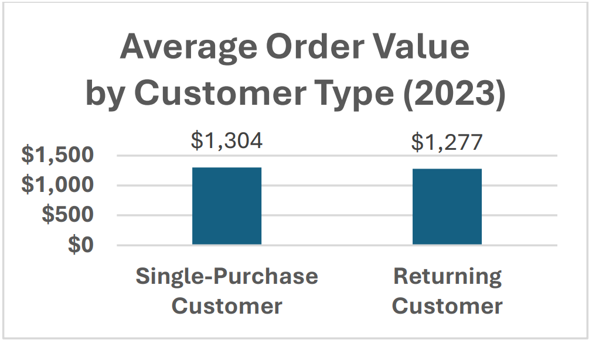

Project Status: In Progress
This project compares Excel Pivot Tables and Python (Pandas + Matplotlib) by answering the same business questions on a 2023 e-commerce dataset, highlighting differences in workflow, scalability, and insight generation.
Excel progress
5/5 questions answered
Python progress
Not started
Last updated
Feb 2026
Current Findings (Excel)
- Revenue concentration: Revenue is dominated by Electronics, Home & Garden, and Sports.
- Discounts: Discounted orders show lower average order value than non-discounted orders.
- Retention: Returning customers drive revenue primarily via higher purchase frequency.
- Device: Mobile dominates order volume; desktop has slightly higher average order value.
- Delivery: Delivery speed shows minimal relationship with customer ratings.
Next Steps
- Replicate the same 5 questions in Python using
pandas+matplotlib. - Compare Excel vs. Python: speed, flexibility, reproducibility, and charting.
- Publish a short final summary: “When to use Excel vs. Python for this workflow.”
Next update: Python replication of Q1–Q5 + a short Excel vs. Python workflow comparison.
Excel Highlights
Selected charts from the Excel analysis. Full write-up is linked above.

Q1: Revenue is concentrated in a few categories despite similar unit volume.

Q3: Returning customers place ~7.5× more orders than single-purchase customers.

Q5: Delivery speed shows minimal relationship with customer ratings.